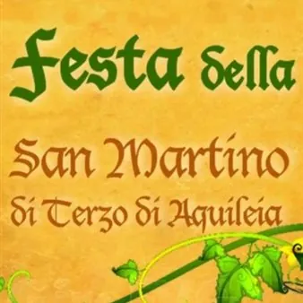

da sab 17 ott a dom 18 ott
Festa della zucca di San Martino di Terzo 2026
Sabato 17 e domenica 18 ottobre 2026 il piccolo borgo di San Martino di Terzo d'Aquileia torna indietro nel tempo. La 27ª Festa della Zucca riporta tra le sue strade accampamenti, mercati, musici, arcieri, antichi mestieri e personaggi in abito medievale.
 Indicazioni
Indicazioni
- Costi e prenotazioni
- Costo non indicato · Prenotazione non indicata
- Programma
- Programma da verificare. Apri la fonte ufficiale per orari e possibili aggiornamenti.
- In caso di maltempo
- Nessuna indicazione specifica pubblicata.
- Note
- Acquisito automaticamente dalla fonte.
L’EVENTO
Descrizione completa
Sabato 17 e domenica 18 ottobre 2026, il borgo di San Martino di Terzo d’Aquileia torna nel Medioevo con la 27ª Festa della Zucca. Per due giornate, strade e piazze si animeranno con accampamenti, mercati, musici, arcieri, antichi mestieri e personaggi in abito medievale. Protagonista sarà come sempre la zucca, affiancata quest’anno da un nuovo tema: il formaggio.
Dopo aver approfondito, nelle precedenti edizioni, il mondo delle spezie e del pane antico, la Festa della Zucca 2026 pone al centro il formaggio e la tradizione casearia del Friuli medievale. A questo tema è dedicata la mostra “Dalla Malga al Monastero”, che racconta la produzione, la diffusione e il ruolo del formaggio nell’alimentazione e negli scambi dell’epoca, dalle malghe fino alle cucine dei monasteri.
Programma completo dell'evento qui
IL PROGRAMMA
Programma e orari
Appuntamenti raccolti dalle fonti elencate. Dove manca un orario, non è ancora disponibile in questa scheda.
Programma pubblicato
- Dal 2026-10-17 al 2026-10-18
INFORMAZIONI UTILI
Prima di partire
- Controllare la fonte prima di partire.
ORGANIZZAZIONE